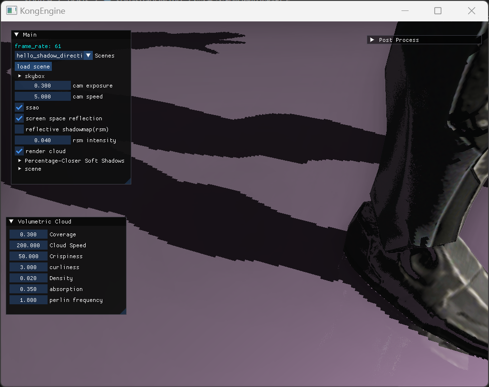
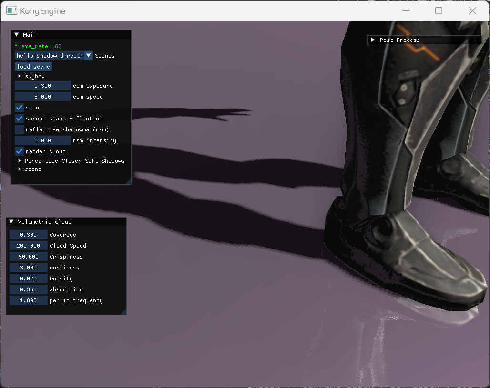
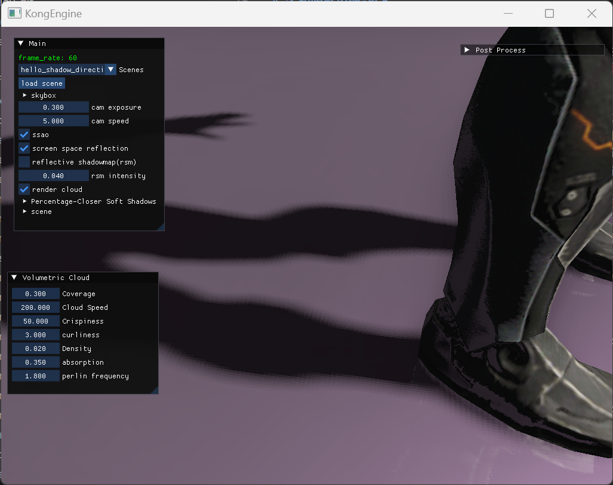
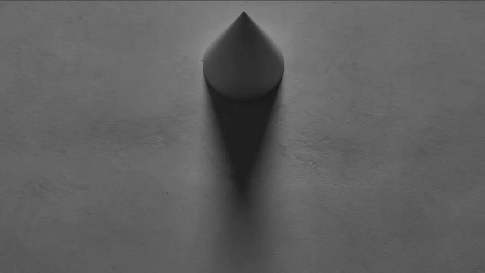
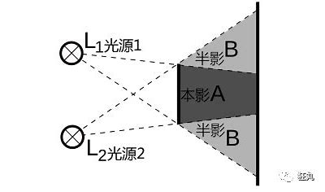
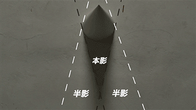
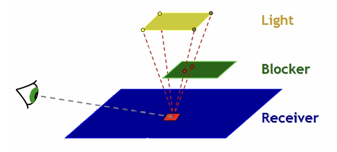
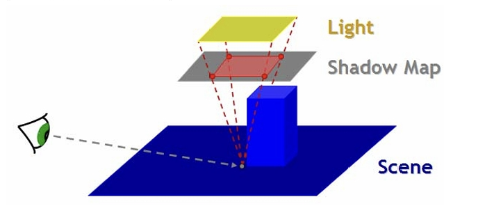
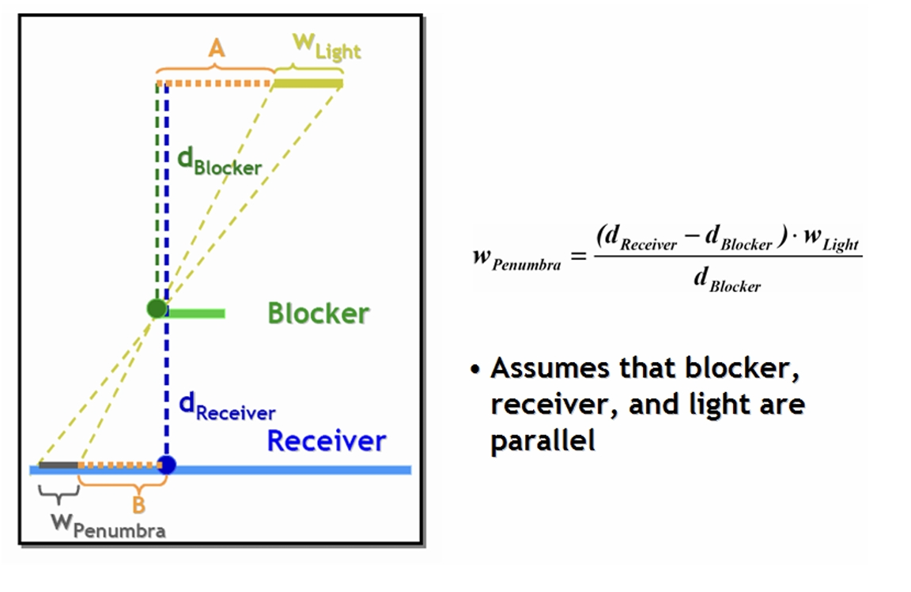
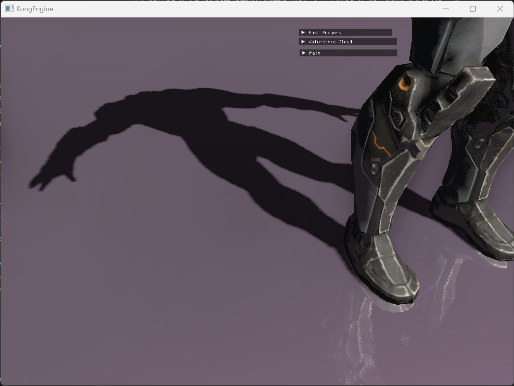

软阴影的实现（PCF和PCSS）
什么是软阴影
在3D中实现阴影最基础的方法是使用阴影贴图shadowmap，根据shadowmap中存储的信息来判定当前渲染的像素是否在阴影当中。
阴影贴图的方法很好理解，但是仅仅基于阴影贴图的阴影效果，在阴影的边缘会有锯齿的情况出现。这往往是由于阴影贴图的分辨率不够导致的，然而一味的提升阴影贴图的分辨率也不是方法，毕竟实时渲染的性能也是需要考虑的一个方面。
那么该如何在可接受的性能表现下实现软阴影的效果呢，下面详细介绍两种方法：Percentage Closer Filtering（PCF）以及Percentage Closer Soft Shadows（PCSS）。
柔和阴影边缘-PCF
下面是一个普通的阴影效果：

这个阴影贴图的分辨率是2048，这是在CSM的最低一级的阴影效果。可以看到阴影边缘的锯齿感非常的强烈，同时由于采样精度的问题，模型的腿上也出现了不正确的阴影区域。最简单的方法就是通过提高阴影贴图的分辨率来缓解这个问题，但是显而易见这不是最好的解决方案，而Percentage Closer Filtering（后简称PCF）可以帮助我们解决这个问题。
什么是PCF
Percentage Closer Filtering（PCF）是一种在计算机图形学中用于生成软阴影的技术。它主要用于解决硬阴影（如简单的阴影映射产生的锐利阴影边缘）不符合真实场景光照效果的问题。
与简单的阴影映射不同，PCF 在判断像素是否在阴影中时，不是只比较单个点的深度。它会在像素点周围的一定区域内进行多次采样。例如，在一个以像素点为中心的小区域（通常是方形或圆形区域）内，对多个采样点进行深度比较。这些采样点的位置可以是均匀分布，也可以采用更复杂的分布方式，如泊松分布，以获得更自然的效果。
对于每个采样点，比较其深度和阴影图中的深度来判断是否在阴影中。然后统计在阴影中的采样点的比例。设采样点总数为N，处于阴影中的采样点数量为n，则阴影强度可以通过公式计算shadow=n/N得到。这个阴影强度用于确定像素最终的阴影效果。如果阴影强度为1，表示像素完全处于阴影中；如果阴影强度为0，表示像素完全不在阴影中；介于两者之间的值表示不同程度的软阴影效果。
PCF的实现
转换为代码如下：
1 | |
这里我使用了矩形的采样区域，可以看到其实当采样区域的半径为1的时候，采样点个数为9，阴影边缘的锯齿感已经得到了明显的改善。模型腿上也没有出现错误的阴影区域，效果大大提升。

当采样半径提升为3，采样点个数为49时，阴影的边缘软化效果更明显了，不过付出了5倍的性能消耗，提升确并没有非常明显。

半影的产生-PCSS
什么是本影和半影
在实际的场景中，我们观察阴影，会发现下面这种情况：

物体的深暗影子周围还有一片区域是浅浅的暗影。深暗影子的区域我们称之为“本影”，而浅暗影子的区域我们称之为“半影”。
这种现象在体积光照（或者区域光照）的情况下很容易出现。其原因是，很多光源是有范围的，如下图假设有一个光源的大小用L1到L2，光源的右边有一个物体。

光源最上点位L1的位置，照向物体的时候，产生的阴影范围是A区域以及下方的B区域，上方的B区域会被L1照亮；L2点产生的阴影范围是A区域和上方的B区域，下方的B区域会被L2照亮。所以我们可以看到，区域A是光源完全的光都会被挡住的区域，所以他的阴影是最深的，是为本影。而两个区域B是挡住了光源的部分区域，同时被光源的另外一部分照亮的，是为半影。

什么是PCSS
在弄明白什么是本影和半影之后，我们来介绍一下PCSS是什么。
Percentage Closer Soft Shadows（PCSS）即百分比渐近软阴影，是计算机图形学中用于生成更逼真软阴影的一种技术，它是在 Percentage Closer Filtering（PCF）基础上发展而来的。
在PCF的基础上，PCSS还额外考虑了光源、遮挡物和接收阴影的物体之间的几何关系，通过这些关系来调整用于计算阴影强度的采样区域大小。通过根据阴影的不同情况动态调整采样区域的大小，PCSS能生成更自然、更符合物理规律的软阴影。
这里是提出PCSS的论文。
其原理总结起来就是根据采样一个区域内处于阴影的比例，来动态的调节这个区域对应的阴影的采样范围。
PCSS的实现步骤
PCSS的实现步骤如下：
首先，计算平均的遮挡物距离。在阴影图中，以当前像素点为中心，在一个初始的较小采样区域内查找深度值小于当前像素点深度的采样点，这些采样点对应的物体即为遮挡物。通过计算这些遮挡物采样点深度的平均值，得到平均遮挡物距离d_blocker。

对应代码为：
1 | |
其中d_receiver为当前像素点到光源的深度值，这个值可以将当前像素点位置变换到光源的投影下得到，在处理阴影贴图的时候就需要拿到了。TextureProjBilinear是获取shadowmap深度值的方法，里面采用了双线性插值的方法，不过对PCSS来说不一定需要使用这个方法。
可以看到这个阶段，PCSS搜索了一个阴影贴图里面的区域（下图红色区域），记录下了这个区域的被阻挡范围的平均深度。

然后根据这个范围，以及三角形相似原理，估算出半影半径。

其中d_receiver、d_blocker我们已知，W_light是光源的范围大小，可以根据实际情况来调整。用图上右方的公式，得出半影的采样范围W_penumbra。
代码如下：
1 | |
最后，根据估算出的半影半径，扩大采样区域，然后在这个更大的区域内进行采样，并按照 PCF 的方式计算阴影强度。这样，离光源较近或遮挡物较近的地方，半影半径较小，阴影较实；离光源较远或遮挡物较远的地方，半影半径较大，阴影较虚，从而实现了更自然的软阴影效果。
代码如下：
1 | |
PCSS的效果
下面是PCSS开启和关闭的效果对比，其中PCSS关闭下PCF的采样半径是3：

可以看到开启了PCSS的效果后，遮挡物体的阴影区域，随着离遮挡物越来越远，出现了越来越明显的半影效果，效果更加自然和真实。
总结
Percentage Closer Filtering（PCF）的作用
-
软阴影生成基础：PCF 是一种用于生成软阴影的基础技术。它基于阴影映射，在判断像素是否在阴影中时，不是只比较单个点的深度，而是在像素点周围一定区域内进行多次采样。
-
阴影强度计算：通过统计采样区域内处于阴影中的采样点比例来计算阴影强度。这种方式能有效避免硬阴影边缘的锯齿问题，使阴影边缘过渡更加自然，产生软阴影效果，提升了阴影的真实感。
-
平衡性能和效果：相对一些复杂的物理软阴影算法，PCF 较为简单，在性能和效果之间取得了较好的平衡，适用于实时渲染场景，如游戏。
Percentage Closer Soft Shadows（PCSS）的作用
-
动态软阴影生成：PCSS 在 PCF 基础上进一步改进。它能够根据光源、遮挡物和接收阴影物体之间的几何关系动态调整采样区域的大小。
-
更自然的阴影过渡：通过计算平均遮挡物距离和估算半影半径，根据半影半径调整采样区域进行采样计算阴影强度。这样生成的软阴影更加符合物理规律，阴影从完全阴影到完全光照的过渡更加自然、真实，在需要高逼真度渲染的场景中能显著提升视觉质量。